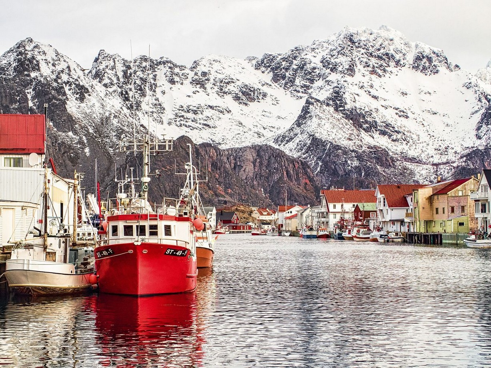
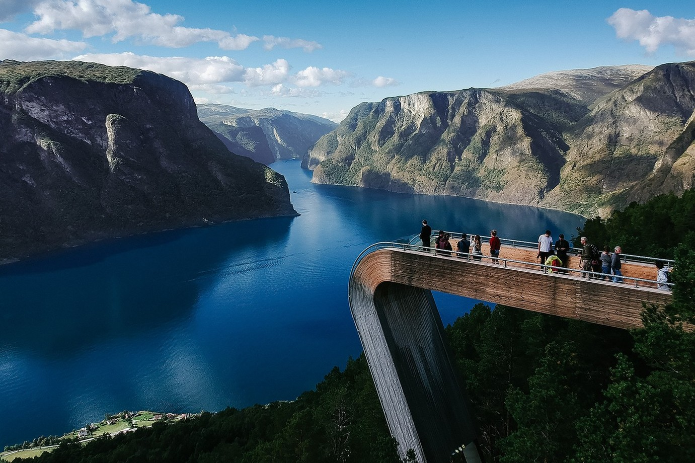
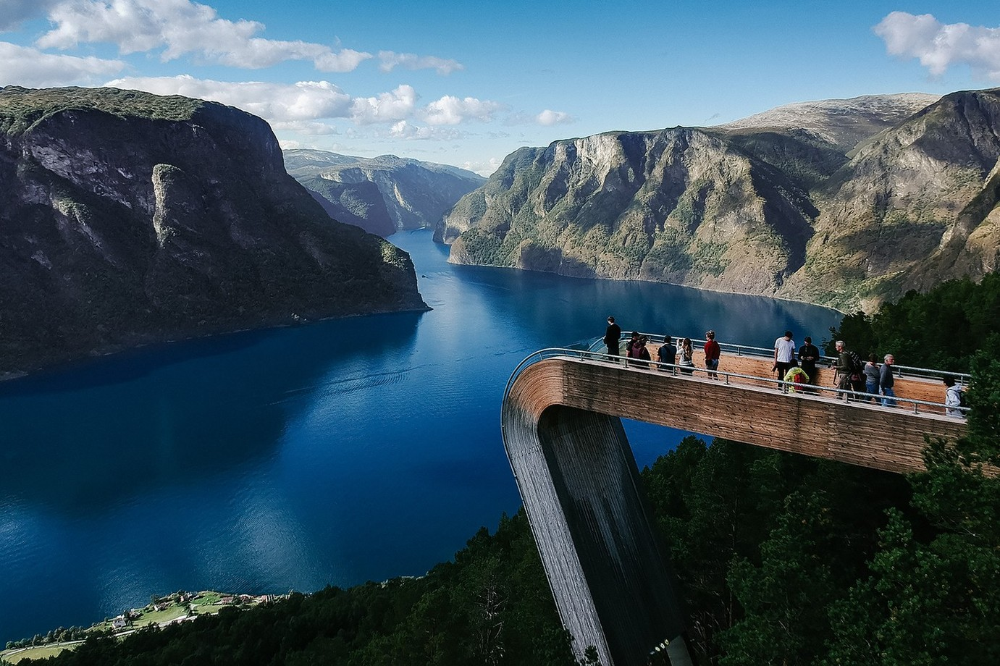
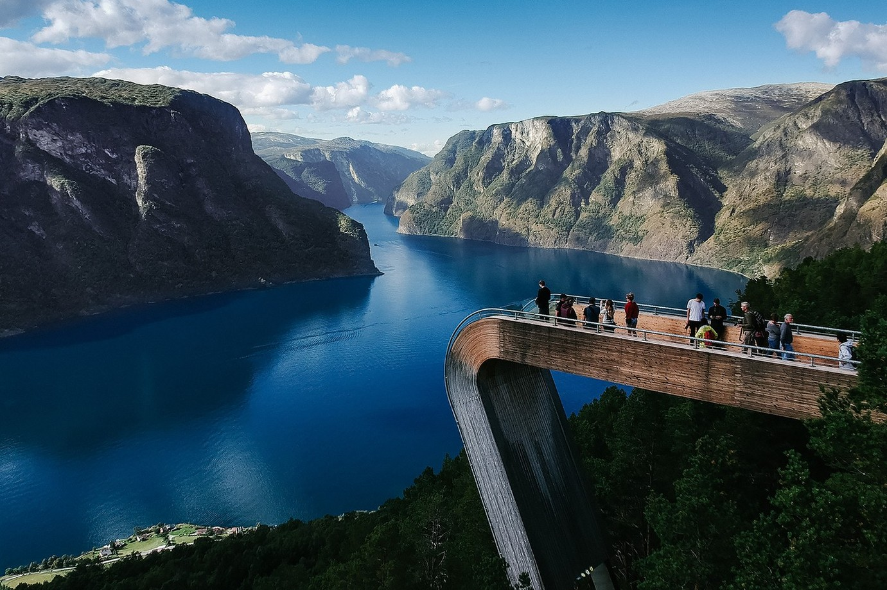

━ STUNNING SPOTS
Beautiful Landscapes
The beauty of Norway can hardly be overestimated. It has literally everything: glaciers, green forests, beaches. Come and see with your own eyes.

 





"Out in the fjord I dragged myself up at once, wet with fever and exhaustion, and gazed landwards, and bade farewell for the present to the town – to Christiania, where the windows gleamed so brightly in all the homes."
Knut Hamsun